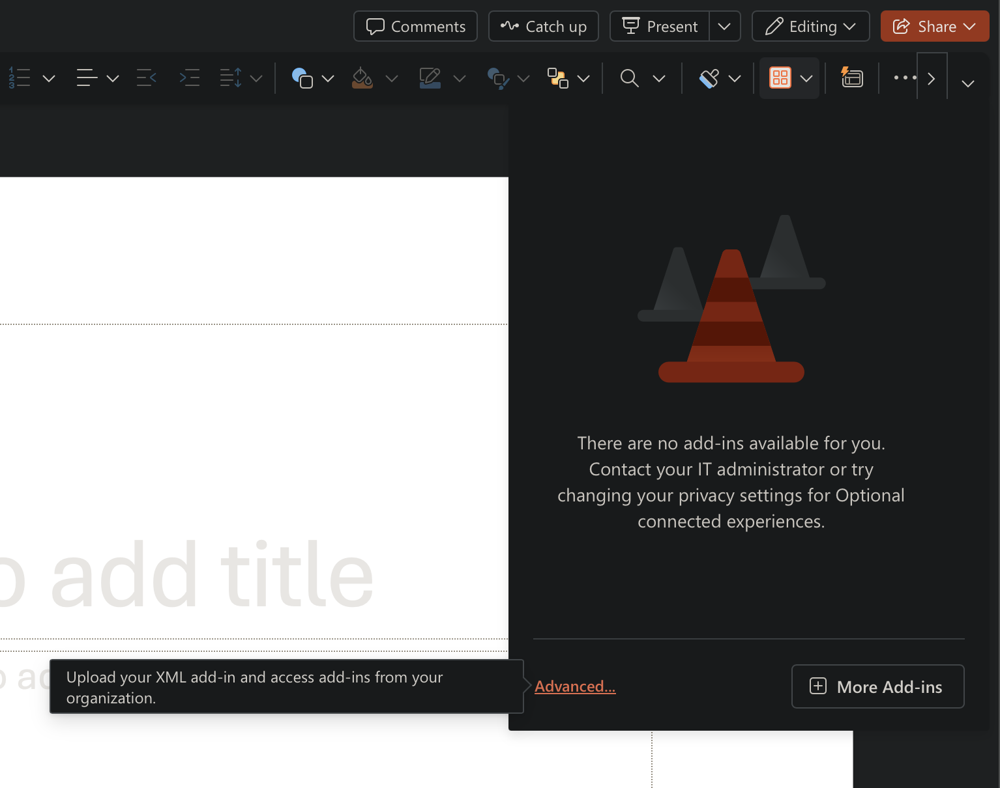

PowerPoint add-in · 1 of 3
Install in PowerPoint for the web
Sideload the manifest in this browser, then open DICOM Slides from any presentation you can edit.
- 1
Download the manifest
Download manifest.xml and keep it somewhere easy to find.
- 2
Open PowerPoint online
Go to PowerPoint for the web and open a presentation.
- 3
Open the upload options
Choose Home > Add-ins > Advanced. Some versions label this option More Settings.
